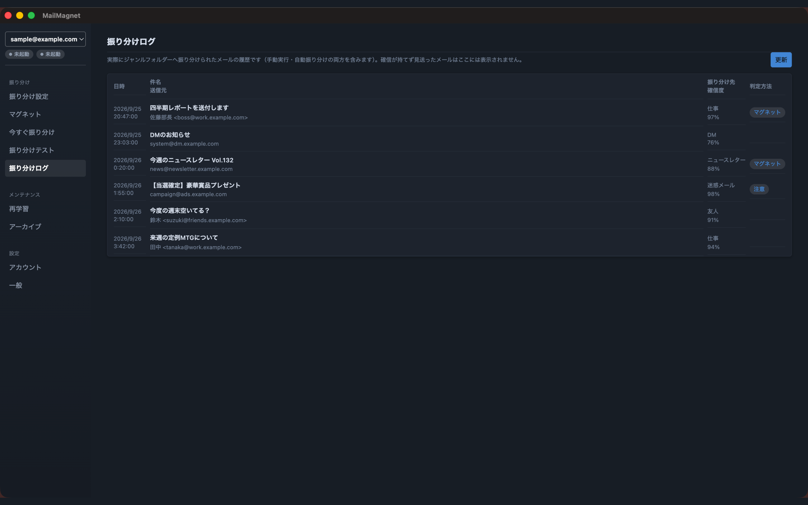
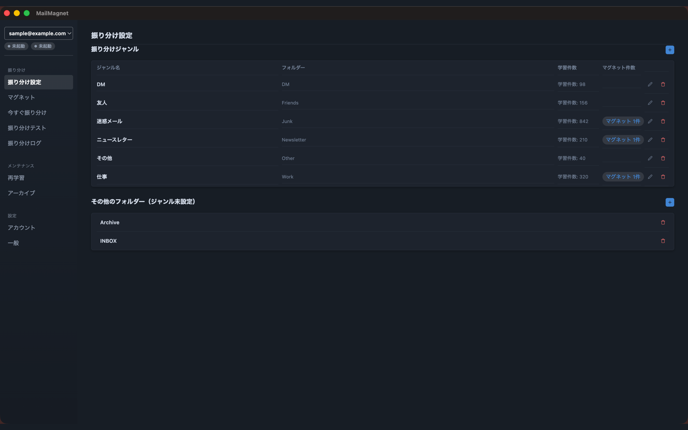
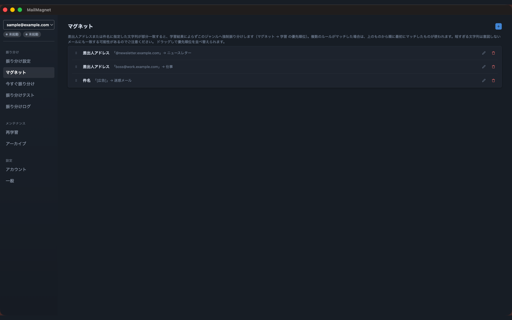
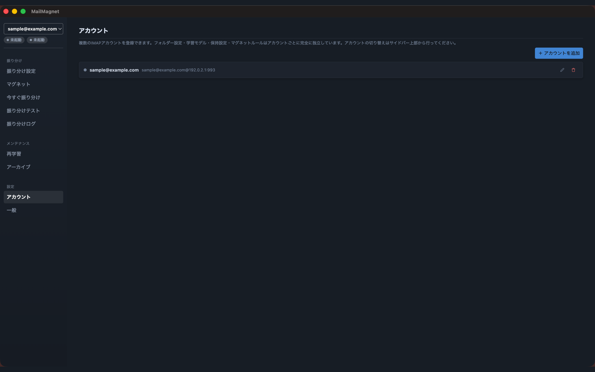
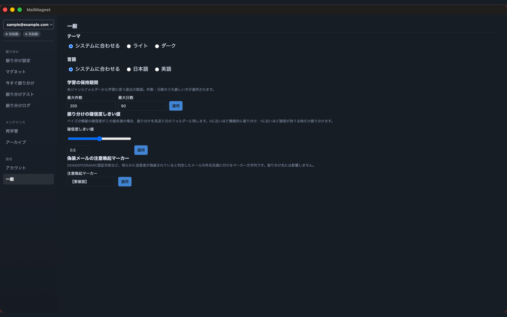

IMAPメールを、ベイズ分類器で賢く自動振り分けするデスクトップメールクライアント。

主な機能
- ベイズ分類器によるジャンル振り分け（友人・仕事・DM など、フォルダ単位で学習）
- SPAMメールの自動判定・振り分け
- IMAPフォルダ構造と連動したジャンル管理・フォルダ作成
- Gmail（OAuth2連携）、Yahoo!、Yahoo!JAPAN、iCloud、AOL、Fastmail、Zoho、その他一般IMAPサーバーに対応
画面で見るMailMagnet
-

ジャンルごとの学習状況・マグネット件数をひと目で確認 -

差出人や件名を指定して、確実に振り分けたいメールをルール化 -

複数のIMAPアカウントを、フォルダ設定・学習モデルごと完全に独立管理 -

テーマ・言語から学習の保持期間・確信度しきい値まで細かく調整